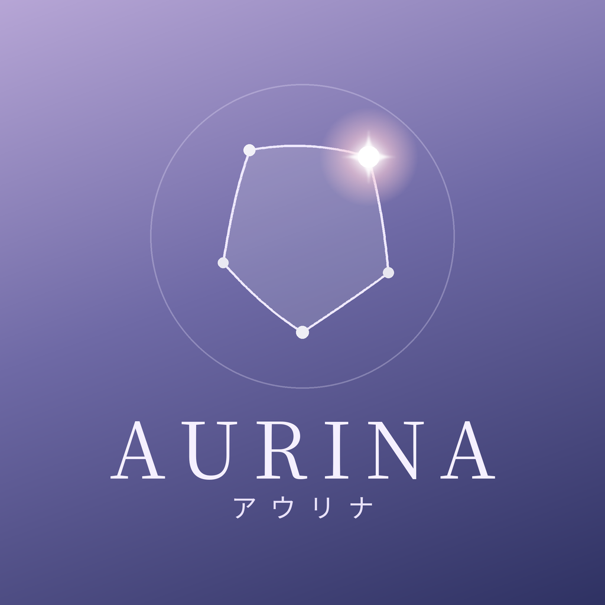

AURINA
気分に合わせて、ドライブに自然の音を
Nature sounds for every drive
よくある質問
画面を消すと音が止まります。
音はアプリを開いている間だけ流れます。使っている間は画面を自動で消しません。
話しかけても反応しません。
最初に「アウリナ」と呼びかけてから続けて話してください。設定アプリでマイクと音声認識が許可されているか確認してください。話しかけられる言葉は、アプリ右上の吹き出しボタンから見られます。
「休憩」が選べません。
走行中は安全のため休憩の音をロックしています。停車して一定時間（初期値60秒）たつと使えます。
Pro の購入を復元したい。
設定画面の「購入を復元」を押してください。
FAQ
Sound stops when the screen turns off.
Sound plays only while AURINA is open. The screen stays on while you use the app.
Voice commands don't work.
Say "Aurina" first, then keep talking. Make sure microphone and speech recognition are allowed in the Settings app. See all voice keywords from the speech bubble button.
I can't choose Rest.
Rest sounds are locked while driving. They unlock after you have been parked for a while (60 seconds by default).
How do I restore Pro?
Tap "Restore purchase" in Settings.
お問い合わせ / Contact: alcylineapps@gmail.com
プライバシーポリシー / Privacy Policy
AURINA ・ Developed by Tadashi ・ Alcyline